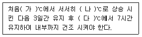

버섯종균기능사 (2015-04-04 기출문제)
1과목: 종균제조(임의구분)
1. 종균 제조 시 살균 방법으로 옳지 않은 것은?
- 사용하는 배지병 종류에 따라 살균시간을 다르게 한다.
- 살균 중에 배기 밸브를 조금씩 열어 수증기와 함께 혼입되는 공기를 제거한다.
- 살균시간은 일정압력 도달 후 내부 온도가 121℃에 도달된 때부터 계산한다.
- 살균 중에 전원 고장으로 살균이 중단되었을 때, 기존 살균 시간을 포함하여 계산한다.
(정답률: 84%)

2. 사물기생형 버섯이 아닌 것은?
- 송이
- 표고
- 큰갓버섯
- 느타리 버섯
(정답률: 83%)
3. 톱밥종균 제조에 대한 설명으로 옳지 않은 것은?
- 수분 함량이 63~65%가 되도록 한다.
- 미송톱밥보다 포플러톱밥 품질이 더 좋다.
- 배지 재료를 1ℓ병에 550~650g 정도 넣는다.
- 고압살균 시 변형 방지를 위하여 PE재질의 병을 사용한다.
(정답률: 84%)
4. 종균의 저장 및 관리요령으로 가장 부적절한 것은?
- 종균 저장 시 외기 온도와 동일하도록 관리한다.
- 종균은 빛이 들어오지 않는 냉암소에 보관한다.
- 곡립종균은 균덩이 방지와 노화 예방에 주의한다.
- 배양이 완료된 종균은 즉시 접종하는 것이 유리하다.
(정답률: 79%)
5. 톱밥배지 제조 시 배지 밑바닥까지 중심부에 구멍을 뚫어주는 이유로 옳지 않은 것은?
- 배양기간을 단축할 수 있게 한다.
- 접종원이 병 하부까지 내려갈 수 있게 한다.
- 병 내부 공기유통을 원활하게 하기 위해서 한다.
- 배지 내 형성되는 수분을 모아 배출하기 쉽게 하기 위해서 한다.
(정답률: 71%)
6. 다음 중 균사 생장의 최적 산도(pH)가 가장 낮은 것은?
- 송이
- 목이
- 여름양송이
- 여름느타리
(정답률: 70%)
7. 팽나무버섯의 균주 보존에 가장 적합한 온도는?
- 약 4℃
- 약 10℃
- 약 15℃
- 약 20℃
(정답률: 73%)
8. 표고버섯 원목재배의 종균접종 과정 중 적절하지 않은 것은?
- 접종용 원목은 참나무류를 선택한다.
- 접종용 종균은 직사광선을 받게 하여 갈색으로 만든다.
- 종균은 10℃ 이하의 통풍이 양호한 냉암소에 보관한다.
- 접종용 원목은 수분 함량이 40% 내외가 적합하다.
(정답률: 85%)
9. 진공 냉동 건조에 의한 보존방법으로 옳지 않은 것은?
- 단기 보존하는 방법이다.
- 세포를 휴면시키는 방법이다.
- 보호제로 10% 포도당을 이용한다.
- 동결방법으로 액체질소를 이용한다.
(정답률: 71%)
10. 종균배지를 고압살균 후 처리방법으로 옳지 않은 것은?
- 냉각실로 옮긴다.
- 곡립배지는 흔들어준다 .
- 톱밥배지는 흔들어준다 .
- 살균 소독된 곳으로 옮긴다.
(정답률: 77%)
11. 양송이의 조직분리 배양방법으로 가장 적합한 것은?
- 뿌리부분의 균사를 분리ㆍ접종한다.
- 균사절편이면 어느 부위나 가능하다.
- 갓과 대의 접합부분의 육질을 분리ㆍ접종한다.
- 대에서 분리ㆍ접종하면 배양이 잘 되지 않는다.
(정답률: 86%)
12. 감자한천배지 1ℓ제조 시 한천은 몇 g을 넣는가?
- 1
- 2
- 10
- 20
(정답률: 84%)
13. 버섯종균을 유통하려고 할 때 품질표시 항목으로 필수 사항이 아닌 것은?
- 종균 접종일
- 생산자 성명
- 품종의 명칭
- 수입 종자의 경우 수입 연월 및 수입자 성명
(정답률: 80%)
14. 양송이 종균의 배양과정 중 오염이 되는 주요 원인이 아닌 것은?
- 살균이 잘못된 경우
- 오염된 접종원 사용
- 배양 중 온도 변화가 없는 경우
- 흔들기 작업 중 마개의 밀착 이상
(정답률: 72%)
15. 무균실에 필요한 도구가 아닌 것은?
- 에틸알코올
- 자외선 램프
- 무균 필터(Filter)
- 스트렙토 마이신
(정답률: 80%)
16. 밀배지 제조 시 탄산석회와 석고의 첨가 이유를 가장 바르게 나타낸 것은?
- 탄산석회: 산도조절, 석고: 결착방지
- 탄산석회: 산도조절, 석고: 건조방지
- 탄산석회: 결착방지, 석고: 산도조절
- 탄산석회: 건조방지, 석고: 산도조절
(정답률: 81%)
17. 버섯의 포자 발아용 배지로 가장 적당한 것은?
- YM 배지
- 퇴비 추출 배지
- 증류수 한천 배지
- 차펙스(Czapek’s) 배지
(정답률: 73%)
18. 표고버섯의 학명으로 옳은 것은?
- Lentinula edodes
- Agaricus bisporus
- Pleurotus ostreatus
- Flammulina velutipes
(정답률: 71%)
19. 액체종균 제조에 대한 설명으로 옳지 않은 것은?
- 감자추출배지나 대두박배지를 주로 사용한다.
- 배지에 공기를 넣지 않는 경우 산도를 조정하지 않는다.
- 느타리 및 새송이는 살균 전 배지를 pH 5.5~6.0으로 조정한다.
- 압축공기를 이용한 통기식 액제 배양에서는 거품 생성 방지를 위하여 안티폼을 첨가한다.
(정답률: 53%)
20. 곡립종균 배양 시 잡균이 발생하는 주요 원인은?
- 빠른 균사 생장
- 배지의 낮은 산도
- 배지의 높은 수분 함량
- 배지의 풍부한 질소 성분
(정답률: 75%)
21. 종균접종용 톱밥배지의 고압살균 시 압력으로 가장 적정한 것은?
- 약 0.1㎏f/cm2
- 약 0.6㎏f/cm2
- 약 1.1㎏f/cm2
- 약 1.6㎏f/cm2
(정답률: 91%)
22. 느타리 종균배양실의 온도에 대한 설명으로 옳지 않은 것은?
- 15℃ 이하에서 균사 생장이 지연된다.
- 28℃ 이상에서 균사 생장이 급격히 저하된다.
- 잡균 발생 지양을 위해서는 22~24℃로 유지하는 것이 좋다.
- 최적 온도보다 고온으로 관리하면 생장은 빠르나 품질이 불량하다.
(정답률: 64%)
23. 버섯의 유성생식으로 형성되는 포자는?
- 유주자
- 담자포자
- 분생포자
- 포자낭포자
(정답률: 86%)
24. 느타리버섯 원균 증식 배지로 가장 적합한 것은?
- 퇴비배지
- 감자배지
- 육즙배지
- 국즙배지
(정답률: 75%)
25. 톱밥배지의 상압살균에 관한 설명으로 옳지 않은 것은?
- 상압 살균솥을 이용한다.
- 증기에 의한 살균 방법이다.
- 100℃ 내외를 기준으로 한다.
- 1 시간 동안 살균을 표준으로 한다.
(정답률: 67%)
26. 우량 종균 선별 방법에 대한 설명으로 옳지 않은 것은?
- 육안으로 색깔을 보고 선별할 수 있다.
- 균사체에서 dsRNA를 분리하여 바이러스 감염 여부를 알 수 있다.
- 페트리 디쉬에 접종 후 37℃ 정도에서 5일간 배양하여 세균의 유무를 알 수 있다.
- 양송이균을 제외한 대부분 종균은 현미경으로 관찰 시꺽쇠연결체가 없어야 우량종균이다 .
(정답률: 71%)
27. 종균접종실 및 시험기구에 사용하는 소독약제인 알코올의 농도로 가장 적절한 것은?
- 60%
- 70%
- 80%
- 90%
(정답률: 90%)
28. 버섯과 식물의 생물학적 차이점에 대한 설명으로 옳지 않은 것은?
- 버섯은 고등균류에 속하는 생물군으로 엽록소가 없다.
- 균사체는 대부분 실 모양의 많은 세포를 가진, 균사로 되어 있는 진핵세포이다.
- 균류는 고등식물과는 달리 줄기, 잎, 뿌리로 나누어 지지는 않으나 발달된 도관체계는 있다.
- 버섯은 타가영양체이며 생태계 중 분해자에 속하고, 식물은 자가영양체이며 생태계 중 생산자에 속한다.
(정답률: 68%)
29. 버섯 균주를 보존하는 데 가장 적합한 부위는?
- 원기
- 포자
- 자실체
- 균사체
(정답률: 62%)
30. 곡립배지에 대한 설명으로 옳지 않은 것은?
- 찰기가 적은 것이 좋다.
- 밀, 수수, 벼를 주로 사용한다.
- 주로 양송이 재배 시 사용한다.
- 배지 제조 시 너무 오래 물에 끓이면 좋지 않다.
(정답률: 80%)
2과목: 버섯재배(임의구분)
31. 표고버섯 원목재배의 실패 가능성이 가장 높은 방법은?
- 원목의 수피가 떨어지지 않도록 한다.
- 표고 원목재배 시 적절한 건조과정이 필요하다.
- 토막치기된 원목은 지면에 직접 접촉되지 않게 놓는다.
- 건조된 원목은 물에 침수한 후 바로 꺼내어 종균을 접종한다.
(정답률: 82%)
32. 양송이 종균을 심을 때 퇴비량에 비하여 종균 재식량이 가장 적은 부분은?
- 표층
- 상층
- 중층
- 하층
(정답률: 70%)
33. 표고 골목 해균의 방제법으로 가장 이상적인 것은?
- 해균 발생 시 농약으로 방제한다.
- 피해가 발생한 골목을 골목장 내에 한쪽으로 치워둔다.
- 해균이 발생하면 골목을 직사광선에 노출 시킨다.
- 골목장은 통풍이 잘 되는 곳에 설치하고 골목은 과습하지 않도록 관리한다.
(정답률: 75%)
34. 볏짚다발 배지 발효 과정에서 악취가 발생하는 이유로 가장 타당한 것은?
- 수분이 부족하여
- 계분이 과다하여
- 퇴비의 온도가 높아서
- 뒤집는 시기가 늦어서
(정답률: 78%)
35. 느타리버섯 볏짚재배 시 볏짚의 물 축이기 작업에 대한 설명으로 옳지 않은 것은?
- 단시간 내 축인다.
- 추울 때 작업한다.
- 물을 충분히 축인다.
- 배지의 수분은 70% 내외가 좋다.
(정답률: 80%)
36. 버섯파리 중에 유충의 길이가 2㎜ 정도로 황색 또는 오렌지색을 띠며, 주로 균상 표면이 장기간 습할 때 피해를 주는 해충은?
- 포리드
- 세시드
- 시아리드
- 마이세토필
(정답률: 85%)
37. 표고 원목재배 시 필요한 기자재가 아닌 것은?
- PP봉지
- 천공드릴
- 종균 접종기
- 수분 측정기
(정답률: 81%)
38. 목이버섯의 학명으로 옳은 것은?
- Armillaria mellea
- Agaricus bisporus
- Volvariella volvacea
- Auricularia auricula-judae
(정답률: 68%)
39. 흑목이균 발생 최적 온도와 광반응 조건으로 옳은 것은?
- 온도는 8~12℃이고 광이 불필요하다.
- 온도는 10~15℃이고 광이 불필요하다.
- 온도는 15~18℃이고 광이 많이 필요하다.
- 온도는 20~28℃이고 광이 많이 필요하다.
(정답률: 60%)
40. 버섯과 균사를 가해하는 응애에 대한 설명으로 옳지 않은 것은?
- 분류학상 거미강의 응애목에 속한다.
- 번식력이 떨어져 국지적으로 분포한다.
- 크기는 0.5mm 내외로 따뜻하고 습한 곳에서 서식한다.
- 생활환경이 불량할 때는 먹지도 않고 6~8개월간 견딘다.
(정답률: 76%)
41. 버섯파리를 집중적으로 방제하기 위한 시기로 가장 적절한 것은?
- 매 주기 말
- 균사생장 기간
- 퇴비배지의 후발효 기간
- 퇴비배지의 야외퇴적 기간
(정답률: 75%)
42. 표고 종균 접종을 위해 가장 적합한 원목의 수분 함량은?
- 25~30%
- 35~40%
- 45~50%
- 55~60%
(정답률: 53%)
43. 표고버섯 톱밥배지 재료 배합 비율 중 적정 혼합 비율은?
- 참나무톱밥 60%에 미강 40% 혼합
- 참나무톱밥 60%에 밀기울 40% 혼합
- 참나무톱밥 85~90%에 미강 10~15% 혼합
- 참나무톱밥 50%에 미강 25%와 밀기울 25% 혼합
(정답률: 76%)
44. 영지버섯 노랑곰팡이병원균에 대한 설명으로 옳은 것은?
- 병원균은 자낭균이다.
- 병원균은 토양으로 전염하지 않는다.
- 병원균은 15~20℃에서 생장이 왕성하다.
- 병원균의 생육적합 산도(pH)는 3~4이다.
(정답률: 59%)
45. 양송이 퇴비배지의 입상이 끝난 후 정열 방법으로 가장 적절한 것은?
- 출입구와 환기통의 완전 밀폐
- 출입구와 환기통의 완전 개방
- 출입구와 환기통의 단시간 개방
- 출입구와 환기통의 단시간 밀폐
(정답률: 68%)
46. 양송이 병해충 중 주로 배지에 발생하며, 산성에서 생장이 왕성하여 산도 조절을 함으로써 방제가 가능한 것은?
- 괴균병
- 마이코곤병
- 푸른곰팡이병
- 세균성갈변병
(정답률: 54%)
47. 천마에 대한 설명으로 옳지 않은 것은?
- 난(蘭)과에 속하는 일년생 식물이다.
- 지하부의 구근은 고구마처럼 형성된다.
- 뽕나무버섯균과 서로 공생하여 생육이 가능하다.
- 지상부 줄기 색깔에 따라 홍천마, 청천마, 녹천마등으로 구별한다.
(정답률: 75%)
48. 만가닥버섯 재배에 배지 재료로 가장 적절한 것은?
- 소나무
- 떡갈나무
- 느티나무
- 오동나무
(정답률: 60%)
49. 표고톱밥재배 시 균을 배양하기 위한 필수 시설이 아닌 것은?
- 살균실
- 무균실
- 배양실
- 비가림 시설
(정답률: 83%)
50. 느타리버섯의 품종 중 광온성 재배 품종은?
- 춘추 2호
- 수한 1호
- 치악 5호
- 원형 1호
(정답률: 69%)
51. 종균의 저장 온도가 가장 낮은 버섯 종류는?
- 양송이
- 표고버섯
- 팽이버섯
- 느타리버섯
(정답률: 84%)
52. 찐 천마의 열풍건조 시 건조기 내의 최적 온도와 유지 시간에 대하여 다음 ( )에 올바르게 넣은 것은?

- (가): 40, (나): 50~60, (다): 50~60
- (가): 30, (나): 40~50, (다): 50~60
- (가): 40, (나): 50~60, (다): 70~80
- (가): 30, (나): 40~50, (다): 70~80
(정답률: 66%)
53. 균사에 꺽쇠 연결체가 없는 버섯은?
- 팽이
- 목이
- 양송이
- 느타리
(정답률: 81%)
54. 표고버섯 골목제조법 중 영양분의 축적이 많아 원목 벌채 조건으로 가장 적절한 것은?
- 나무의 수피가 벗겨져 있고 수액 유동이 정지된 시기
- 나무의 수피가 벗겨져 잇고 수액 유동이 활발한 시기
- 나무의 수피가 벗겨지지 않고 수액 유동이 정지된 시기
- 나무의 수피가 벗겨지지 않고 수액 유동이 활발한 시기
(정답률: 79%)
55. 주로 곡립종균을 사용하여 재배하는 버섯은?
- 표고
- 느타리
- 양송이
- 뽕나무버섯
(정답률: 73%)
56. 봉지재배로 전복느타리종균을 접종하였다. 버섯 발이 유기 관리방법으로 옳은 것은?
- 실내온도 18~24℃로 유지한다.
- 실내습도 70~80%로 유지한다.
- 비닐을 완전 제거하여 생육 시 배지 회수율이 낮다.
- 비닐에 칼집만 내어 생육 시 습도 유지 관리가 어렵다.
(정답률: 52%)
57. 양송이 복토(광질 토양) 재료의 최적 수분 함량은?
- 45%
- 55%
- 65%
- 75%
(정답률: 69%)
58. 표고의 균사 생장 최적 온도로 가장 적절한 것은?
- 15℃ 내외
- 25℃ 내외
- 35℃ 내외
- 40℃ 내외
(정답률: 72%)
59. 양송이 퇴비 퇴적 시 퇴비 재료의 최적 탄질율(C/N율)로 옳은 것은? (단, 종균 접종 시의 경우는 제외한다.)
- 25 내외
- 35 내외
- 45 내외
- 50 내외
(정답률: 63%)
60. 느타리버섯 종균 접종 후 토막쌓기에 가장 적합한 장소는?
- 관수가 용이한 곳
- 북쪽의 건조한 곳
- 직사광선이 닿는 곳
- 주∙야간 온도 편차가 큰곳
(정답률: 80%)